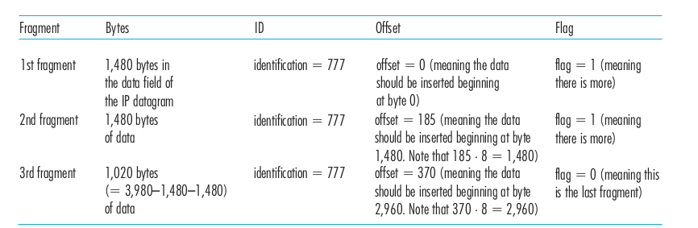

Network Layer#
- Switches - link layer devices
- Routers - network layer devices
Forwarding Table
Forwarding table#
- Router has forwarding table
- A router forwards packet by examining the value in header field of arriving packet
- Use this header value to index into the router’s forwarding table.
- In table, value for that header indicates the router’s outgoing link interface to
which that packet is to be forwarded. - Depending network-layer protocol,the header value could be the destination address or an indication of connection to which the packet belongs.

Virtual-circuit and datagram#
| Virtual-circuit (VC)networks | Datagram Networks |
|---|---|
| Host to host i.e handshaking | Connection service |
| VC setup: Each time a new connection is establish , new connection entry in forwarding table , Connection is released, entry removed from table. | No VC setup Each time end system when sends a packet It stampas packet with destination(end system) address Maintain info in forwarding table |
| Light headed | Over headed |
| signaling protocols: Message protocol for - sending initiating and terminate message to setup VC. | When packet arrives at router it uses , packet’s destination address to forward packet |
| Determine the path(series of links and routers) between sender and receiver. | longest Prefix matching algorithm is used with destination address in a router to find the link interface |
| Determine VC number for each link along the path | NO connection state information is stored |
| Reserve network resources (bandwidth)along the path | Resources are on-demand |
| Packet flow the same path | Different packets may flow different paths |
| Packets Arrives in order | Packets arrive out of order |
| Less Delay | More Delay |
| Eg : ATM ( Asynchronous transfer mode) | Eg : Internet |
Note : connection oriented service in transport layer different from network layer connection system


Internal of a Router#
Function of router
- forwarding
- routing

Input ports
- packets are admitted into the router
- terminate physical link layer at the router
- lookup function performed at input port
- forwarding table consulted here to determine which output port for incoming packets
Switching fabric
- connects the router's input ports to its output ports.
- completely contained within the router
- its like network inside a network router
Output ports
- stores packets received from switching fabric
- and transmits to out going layer by performing link-layer and physical-layer function
Routing processor
- execute routing protocols
- maintains routing tables
- computes the forward table for router
- perform network management functions
Switching#
ways to do switching(forwarding)
- Switching via memory
- Switching via bus
- Switching via interconnection network
IP : Forwarding and addressing in the Internet#
3 major component of Internet's network layer
- IP protocol
- routing protocol
- facility to report errors, ICMP
network layer packet is referred as datagram
syntax and semantics of IPv4 datagram format

Version number
- 4 bit, IP protocol version of datagram
- helps router to determine how to interpret reminder of IP datagram
- different version of IP use different datagram format
Header length
- 20 byte header, determine where in IP datagram the data actually begin
Type of service
- allow different type of IP datagram(eg real time datagram , non-real time datagram )
Data gram length
- total length of IP datagram(header+data)
- 16 bits
Identifier,flags,fragmentation offset
- deal with IP fragmentation
- IPv6 doesn't allow for fragmentation at routers
Time-to-live
- ensure that datagram do not circulate forever in network
- decremented by 1 each time datagram is processed by a router
- 0 TTL - datagram must be drop
Protocol
- used when datagram reaches destination
- protocol number indicate the specific transport-layer protocol to which the data portion of this datagram should be passed
- eg: 6-TCP,17-UDP
- binds network and transport layer
Header checksum
- detect bit errors in received IP datagram
- if checksum carried by datagram != computed checksum then router display discard datagram
Source and destination IP address
options
- allow ip header to be extended
Data
- contains transport layer segment (TCP or UDP or ICMP massages )
IP Datagram Fragmentation#
- some protocol carry big gram some carry small datagrams
- that is different protocol has different maximum transmission unit.
what cause data fragmentation ?
- each links along the route between sender, destination can use different link-layer protocol
- and each of these link can have different
MTU - eg: router receive an IP datagram from one link- check forwarding table choose the outgoing link , and find that
MTUof this link is smaller than length of IP datagram.
fragmentation
- Fragment data in IP datagram into two or more smaller ip datagram,
- encapsulate each of these smaller IP datagram in a separate link-layer frame
- send these frame over outgoing link
- each of these smaller datagram is referred as fragment
points
- fragments needs to reassemble before reaching transport layer at destination
- destination host reassembles the fragments
- destination host examine the(identification flag , fragmentation offset) identification number of datagrams stamped by sending host
- IP is unreliable - one or more fragment won't arrive at destination
- so , last fragment is flag=0,other marked as flag =1
- if more that one or more doesn't arrive, incomplete datagram is discarded
- TCP will recover this loss by retransmitting data by source
drawback
- complicate routers and end system
- can be used to create lethal DoS attacks, hacker send series of unexpected fragments eg: Jolt2 attack


IPv4 Addressing#
interface
- The boundary between the router and any of its link
- router have multiple links therefore have multiple interface
- every router and host, receiving and sending datagram, therefore every interface should have IP address.
IP Address
- 32 bit long(4 bytes) - 2^32 possible ip address - 4billion
- written dotted-decimal-notation
- IP address 193.32.216.9 - 8bit.8bit.8bit.8bit
- each interface of router and host have unique IP address
subnet- interconnecting 3 host interface (fig 4.15)
subnet mask
- IP addressing assigns an address to this
subnet: 223.1.1.0/24, where the /24 notation, sometimes known as asubnet mask - The subnet 223.1.1.0/24 consists of three host interfaces :
(223.1.1.1, 223.1.1.2, and 223.1.1.3)
one router interface :(223.1.1.4).


CIDR
internet's address assignment strategy is known as Classless Interdomain Routing
a.b.c.d/x
x : no of bits in first part of address
x most significant bits referred as prefix
organisation assigned a range of address with comman prefix.IP address of devices within the organisation share comman prefix.
classful addressing
before CIDR was adopted,network portions of an IP address were constrained to be 8, 16, or 24 bits in length
8 - class A
16- class B
24- class C
subnet portion : 1,2,3 bits long
class C (/24) subnet could accommodate only up to 2^8 – 2 = 254 hosts
broadcast address
IP broadcast address 255.255.255.255.
When a host sends a datagram with destination address 255.255.255.255, the message is delivered to all hosts on the same subnet.
how range of ip address is obtain#
- network admin contact ISP
- IP address are managed under the authority of ICANN (Internet Corporation for Assigned Name and numbers)
- ICANN - assign ip adress as well as manage DNS servers
Obtaning a Host Address: The Dynamic Host Configuration Protocol#
- once organization got addresses, it assign to host and routers interface
DHPCallows a host to obtain IP address automatically- network admin can configure DHCP so that given host receives the same IP address each time it connect to the network
- or host may assign temporary IP address , it will be different each time host connect to network
- DHCP allows host to learn info such as its
- subnet mask ,
- the address of its first top router(default gateway)
- address of local DNS server
- also refer as plug play protocol : ability to automate network-related aspects of connecting host into a network
- used in residential Internet access network , host join and leaves network frequently
- DHCP is ideally suited for the situation where many users are coming and going and addresses are needed for limited amount of time
- DHCP is a client server protocol
- each subnet has a DHCP server.If no server present on the subnet
- DHPC relay agent that knows the address of DHPC server
DHPC is a 4 step process#
DHPC server discovery
- First message is generated the communication between server and client
- message sent by client in-order to discover whether any DHPC server is present or not
- message is broadcasted
DHPC server offers
- server respond to host in this message specifying unleashed Ip address and other TCP info
- message is broadcasted by server
- size of message 342 bytes
- if more than one DHPC server present client accept first DHCP offer message it receive
- serve Id is specified in the packet
DHPC request
- the newly arrive client will chose from among on or more offers and respond to selected offer with DHCP request message
- echoing back config parameters
DHPC ACK
- server respond to DHCP request message with DHPC ACK message , confirming request parameters
Once client revives DHCP ACK interaction in complete
client can use DHCP-allocated IP address for the lease duration
Shortcoming#
- new IP address is obtain from DHCP each time connect to new subnet
TCP connection to a remote app can be maintained as mobile node moves between subnets
Network Address Translation (NAT)#
- IT's a way to map multiple local private addresses to public before transferring the information
- Organization that want multiple devices to employ single ip address use NAT
- eg: home routers
- let say ,request made in web from your laptop , request send to router in form of packet.
- router changes outgoing private local ip address to public address.
- because the receiving server won't know where to send information back. As device iP is private local .
- NAT behaves like a single device with a single ip , for outside world
how home network devices get the ip address
- NAT router get ip address from ISP's DHCP server
- router runs DHCP server to provide addresses to computers within NAT-DHCP-router-controlled home network's address space
NAT Table
- use to tell where/which host to forward given datagram
security NAThiding details of home network from outside world
NAT face agues
- port numbers are meant to be used for addressing processes, not for
addressing hosts - routers
are supposed to process packets only up to layer 3 - NAT
protocol violates the so-called end-to-end argument - we should use IPv6 to
solve the shortage of IP addresses, rather than recklessly patching up the problem
with a stopgap solution like NAT
problem with NAT in P2P application
- P2P app : participating Peer A should be able to initiate TCP connection with other peer B
- problem is Peer B is behind NAT, it can't act as server and accept TCP connection
- this NAT problem can be circumvented if Peer A is not behind a NAT
- Peer A can first contact PeerB through an intermediate Peer C, which is not behind a NAT and to which B has
established an ongoing TCP connection. - Peer A can then ask Peer B, via Peer C, to initiate a TCP connection directly back to Peer A.
- Once the direct P2P TCP connection is established between Peers A and B, the two peers can exchange messages or
files. This hack, called connection reversal
-
UPnP Universal Plug and Play#
- which is
a protocol that allows a host to discover and configure a nearby NAT
Internet Control Message Protocol#
- use of ICMP is for error reporting.
- For example, when running a Telnet, FTP, or HTTP session,you may seen error message such as “Destination network unreachable.”
- CMP messages have
- type and a code field
- the header and the first 8 bytes of the IP datagram that caused the ICMP message to be generated in the
first place (so that the sender can determine the datagram that caused the error). - ping program sends an ICMP type 8 code 0 message to the specified host.
- source quench message : ts original purpose was to perform congestion control—
to allow a congested router to send an ICMP source quench message to a host to
force that host to reduce its transmission rate. - Traceroute is implemented with ICMP messages. To determine the names and addresses of the routers
between source and destination
IPv6#
how will public Internet, which is based on IPv4 transitioned to IPV6#
dual-stack approach
- where IPv6 nodes also have a complete IPv4 implementation.
Such a node, referred to as an IPv6/IPv4 node - has the ability to send and receive both IPv4 and IPv6 datagrams
- IPv6/IPv4 nodes must have both IPv6 and IPv4 addresses
- DNS which can return an IPv6 address if the node name being resolved is IPv6-capable, or other-
wise return an IPv4 address.
tunneling
A brief Foray into IP Security#
- One of these protocols is IPsec, one of the more popular secure network-layer protocols and also widely deployed in Virtual Private Networks (VPNs)
- if two hosts want to securely communicate, IPsec
needs to be available only in those two hosts. All other routers and hosts can continue to run vanilla IPv4. - When two hosts have an IPsec session established between them, all TCP andUDP segments sent between them will be encrypted and authenticated
services provided by IPsec
- Cryptographic agreement Mechanisms that allow the two communicating hosts
to agree on cryptographic algorithms and keys. - Encryption of IP datagram payloads. When the sending host receives a segment
from the transport layer, IPsec encrypts the payload. The payload can only be
decrypted by IPsec in the receiving host - Data integrity IPsec allows the receiving host to verify that the datagram’s
header fields and encrypted payload were not modified while the datagram was
en route from source to destination. - Origin authentication When a host receives an IPsec datagram from a trusted
source, the host is assured that the source IP address in the datagram is the actual source of the datagram.